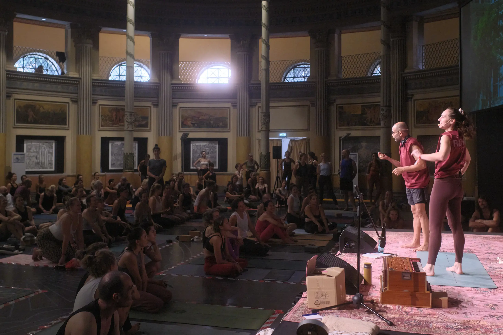
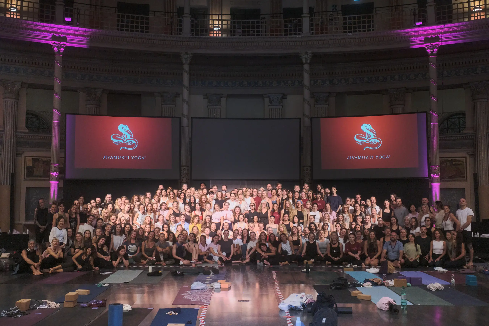
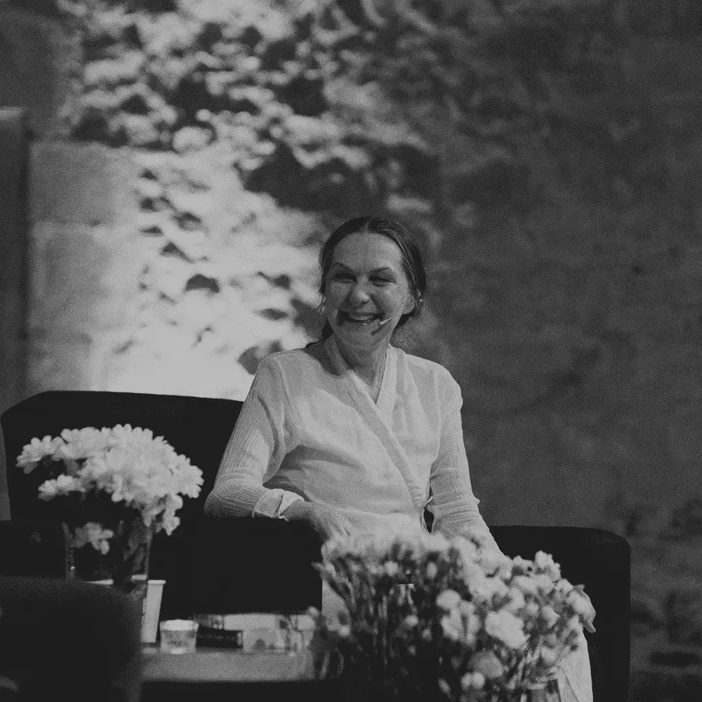
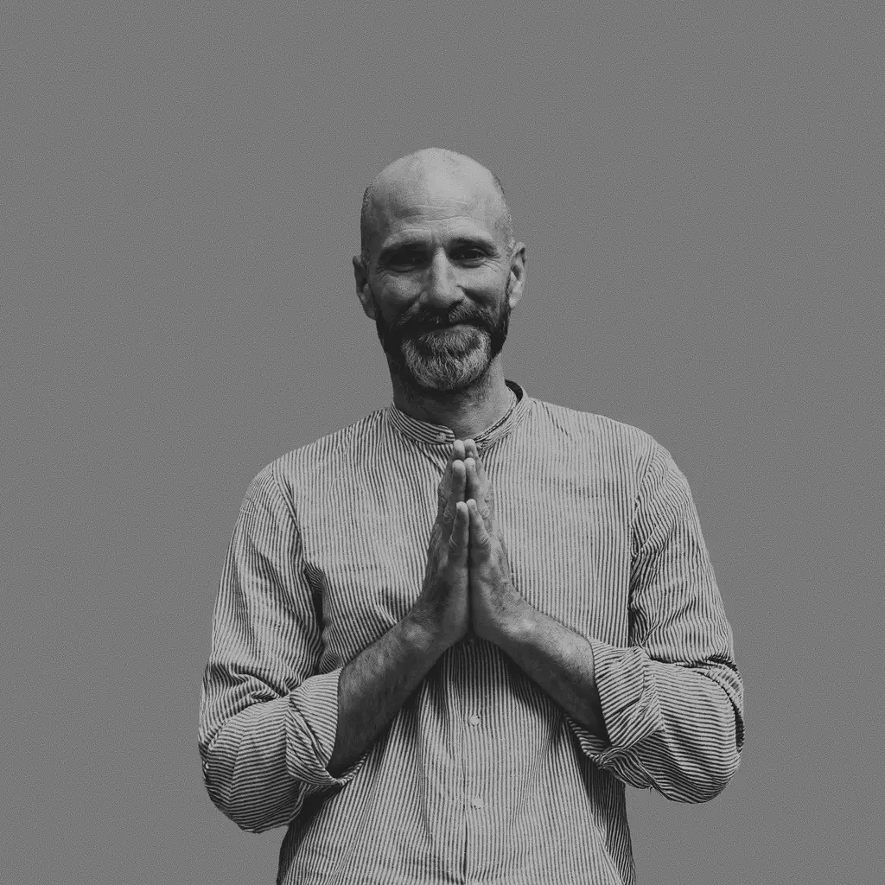
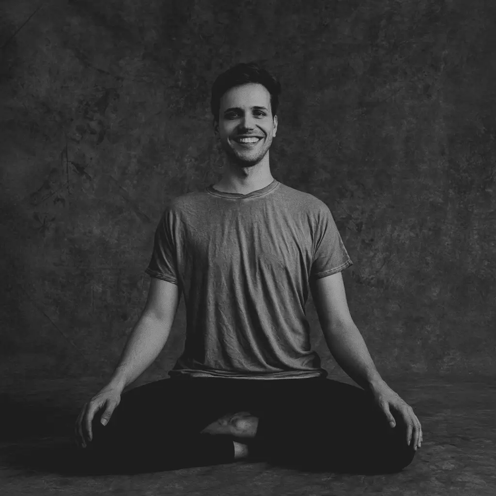

LINE UP

MEET THE TEACHERS OF TRIBE 2027
The teachers of Tribe 2027
The teachers of the Jivamukti Yoga Tribe Gathering 2027 in Luxembourg.
JOIN USThe line-up

Sharon Gannon
Yogeswari
Camilla Veen

Petros Haffenrichter
Martyna Febre
Anna Lunegova
HaChi Yu
Emma Henry

Moritz Ulrich
Alexandra Colombo
Magali Lehners
TEACHER NAME
About
Classes at Tribe 2027
Schedule available soon